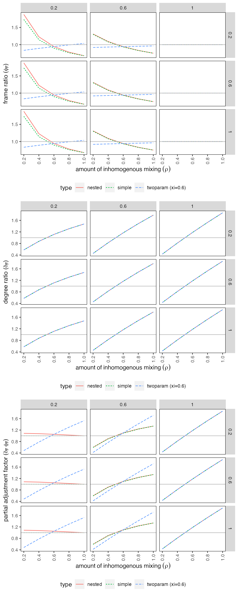
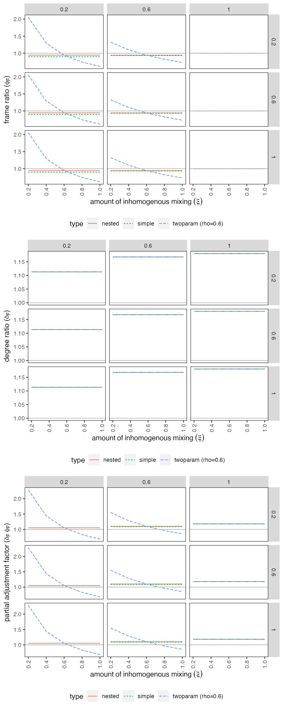

vignettes/sbm-expectedvalues.Rmd
sbm-expectedvalues.Rmd## Warning: replacing previous import 'dplyr::union' by 'igraph::union' when
## loading 'nrsimulatr'## Warning: replacing previous import 'dplyr::as_data_frame' by
## 'igraph::as_data_frame' when loading 'nrsimulatr'## Warning: replacing previous import 'dplyr::groups' by 'igraph::groups' when
## loading 'nrsimulatr'## Warning: replacing previous import 'dplyr::failwith' by 'plyr::failwith' when
## loading 'nrsimulatr'## Warning: replacing previous import 'dplyr::id' by 'plyr::id' when loading
## 'nrsimulatr'## Warning: replacing previous import 'dplyr::summarize' by 'plyr::summarize' when
## loading 'nrsimulatr'## Warning: replacing previous import 'dplyr::count' by 'plyr::count' when loading
## 'nrsimulatr'## Warning: replacing previous import 'dplyr::desc' by 'plyr::desc' when loading
## 'nrsimulatr'## Warning: replacing previous import 'dplyr::mutate' by 'plyr::mutate' when
## loading 'nrsimulatr'## Warning: replacing previous import 'dplyr::arrange' by 'plyr::arrange' when
## loading 'nrsimulatr'## Warning: replacing previous import 'dplyr::rename' by 'plyr::rename' when
## loading 'nrsimulatr'## Warning: replacing previous import 'dplyr::summarise' by 'plyr::summarise' when
## loading 'nrsimulatr'## Warning: replacing previous import 'igraph::crossing' by 'tidyr::crossing' when
## loading 'nrsimulatr'This file shows the (analytically-derived) expected values for several quantities under the stochastic block model simulation design. There are three variants of the design: simple, nested, and two-parameter. These can be distinguished by the mixing matrices, as shown below.
In the simple mixing matrix, the probability of a tie between any two vertices that are not in exactly the same group is multiplied by \(\rho\):
\[ \begin{matrix} & ~F~H & ~F \lnot H & \lnot F ~H & \lnot F \lnot H \\ ~F~H & \zeta & \rho\cdot\zeta & \rho\cdot\zeta & \rho\cdot\zeta \\ ~F \lnot H & \rho\cdot\zeta & \zeta & \rho\cdot\zeta & \rho\cdot\zeta \\ \lnot F ~H & \rho\cdot\zeta & \rho\cdot\zeta & \zeta & \rho\cdot\zeta \\ \lnot F \lnot H & \rho\cdot\zeta & \rho\cdot\zeta & \rho\cdot\zeta & \zeta \end{matrix} \]
In the nested mixing matrix, the probability of a tie between any two vertices who differ in one dimension (membership in \(F\) or membership in \(H\)) is multiplied by \(\rho\); the probability of a tie between two vertices that differ on both dimensions is multiplied by \(\rho^2\):
\[ \begin{matrix} & ~F~H & ~F \lnot H & \lnot F ~H & \lnot F \lnot H \\ ~F~H & \zeta & \rho\cdot\zeta & \rho\cdot\zeta & \rho^2\cdot\zeta \\ ~F \lnot H & \rho\cdot\zeta & \zeta & \rho^2\cdot\zeta& \rho\cdot\zeta \\ \lnot F ~H & \rho\cdot\zeta & \rho^2\cdot\zeta& \zeta & \rho\cdot\zeta \\ \lnot F \lnot H & \rho^2\cdot\zeta& \rho\cdot\zeta & \rho\cdot\zeta & \zeta \end{matrix} \]
In the two-parameter mixing matrix, the probability of a tie between two vertices that differ in membership in \(F\) is multiplied by \(\xi\); and, independently, the probability of a tie between two vertices that differ in membership in \(H\) is multiplied by \(\rho\):
\[ \begin{matrix} & ~F~H & ~F \lnot H & \lnot F ~H & \lnot F \lnot H \\ ~F~H & \zeta & \rho\cdot\zeta & \xi\cdot\zeta & \xi\cdot\rho\cdot\zeta \\ ~F \lnot H & \rho\cdot\zeta & \zeta & \xi\cdot\rho\cdot\zeta & \xi\cdot\zeta \\ \lnot F ~H & \xi\cdot\zeta & \xi\cdot\rho\cdot\zeta & \zeta & \rho\cdot\zeta \\ \lnot F \lnot H & \xi\cdot\rho\cdot\zeta & \xi\cdot\zeta & \rho\cdot\zeta & \zeta \end{matrix} \]
The expected values for the number of connections between groups or sets of groups depends on the structure of the mixing matrix. Write the number of vertices in each of the four blocks as a vector, \(\mathbf{n}\).
Suppose we wish to count the number of expected connections from a set \(A\) to another set \(B\), with both \(A\) and \(B\) built up from one or more of the four blocks. Let \(\mathbf{a}\) be the 0/1 vector that indicates which blocks \(A\) contains, and \(\mathbf{b}\) be the 0/1 vector that indicates which blocks \(B\) contains. The size of A is then \(N_A = \mathbf{a}^T \mathbf{n}\).
Let \(\mathbf{a}_N = \mathbf{a} * \mathbf{n}\), where \(*\) denotes element-wise multiplication. Then
\[ \begin{equation} d_{A,B} = \mathbf{a}_N^T ~M~ \mathbf{b}_N - (\mathbf{a} * \mathbf{b} * \mathbf{n})^T \text{diag}(M). \end{equation} \]
To understand this expression, note that the number of edges between two distinct blocks \(i\) and \(j\) will be \(N_i~N_j~M_{ij}\). Since we do not permit self-loops, the number of edges from one block to itself will be \(\frac{N_i~(N_i - 1)}{2}~M_{ii}\). The expression
\[ \begin{equation} \mathbf{a}_N^T~M~\mathbf{b}_N = \sum_{i \in b(A)} \sum_{j \in b(B)} N_i~N_j~M_{ij} \end{equation} \] where \(b(A)\) and \(b(B)\) are the sets of blocks consisting of \(A\) and \(B\) is almost what we want. The problem is that each block \(i\) in both \(b(A)\) and \(b(B)\) is sending edges to itself. In the equation above, it contributes \(N_i^2~M_{i,i}\) instead of \(\frac{N_i~(N_i - 1)}{2}~M_{i,i}\). So instead of the equation above, we actually want
\[ \begin{equation} d_{A, B} = \sum_{i \in b(A)} \sum_{j \in b(B)} N_i~N_j~M_{ij} - \sum_{i \in b(A) \cap b(B)} \frac{(N_i^2 + N_i)}{2}~M_{i,i}, \end{equation} \]
In this equation, the subtracted term accounts for the difference between \(N_i^2\) and \(\frac{N_i~(N_i - 1)}{2}\).
Next, we will look at the expected values for several important quantities under all of the versions of the stochastic block-model.
First we’ll look at these holding \(\xi\) fixed at 0.6 (which only affects the twoparam model):

Next we’ll look at these holding \(\rho\) fixed at 0.6 (which only affects the twoparam model):
